TC4985 Service Notes
The following notes relate to various aspects of servicing the TC, partly as a record of techniques for future reference and partly to document why I made certain decisions.
Before my first service I started by trying to find a list of jobs that should be carried out. This resulted in this maintenance schedule on the T Register of the MG Car Club of Victoria (Australia)! A very useful document.
Choice of Engine Oil
Before I started my first service on April 2nd 2016 I asked the question: What oil should be used in a 68-year-old MG TC? Around the internet there seemed to be a lot of 'opinion' about engine oil in general and about the suitability of modern oils for classic cars, but little real guidance on what to use.
The choices include:
- Mineral or synthetic (or a mixture);
- Multi-grade or single grade (the TC Instruction Manual specified S.A.E. 30);
- The quantity of ZDDP (zinc dialkyldithiophosphates);
- The presence of other additives.
Clearly moden oils are designed for modern engines and so staying with an oil that is claimed to be for 'classic' cars seems sensible, even though some product specification refer to 'classics of the 70s and 80s'! These all seem to be mineral oils.
A multi-grade oil helps keep the viscosity stable over a range of temperatures. However, the TC's Instruction Manual lists S.A.E. 30 for 'Tropical and temperate down to 0°C'. And I keep the car in a garage, using it less often during the winter.
ZDDP seems to be a pretty poluting substance, but also seems to reduce wear, particulalry to cam followers. A good overview article can be found here. So some ZDDP would seem to be beneficial, even though the amount is hard to pin down.
Sticking to a 'classic' oil should result in other additives that are sympathetic to older engines, one hopes.
So in the end I chose Morris Golden Film SAE 30, mainly because it was stocked by a local motor spare shop and I found on the Classic Oils web site that it contains 300ppm of ZDDP.
Go to top.Oil Filter
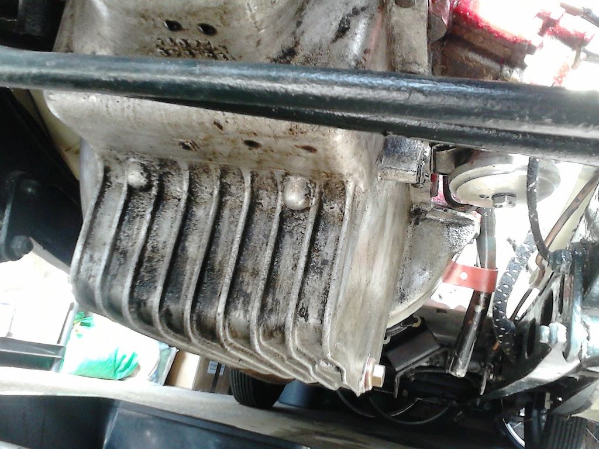 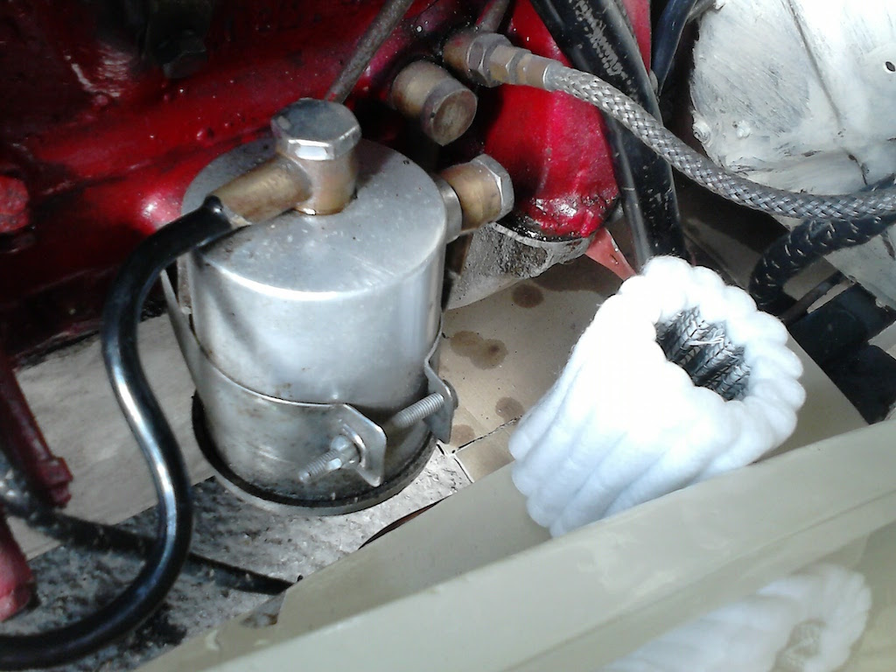The first photo on the right shows the oil filter, which is not the original, being from a later TD or TF. Beside the filter housing is the replaceable element. the photo of the sump shows the underside of the filter housing and the bolt that holds the bottom to the rest of the housing. It turned out that an A/F socket fits this bolt well!
 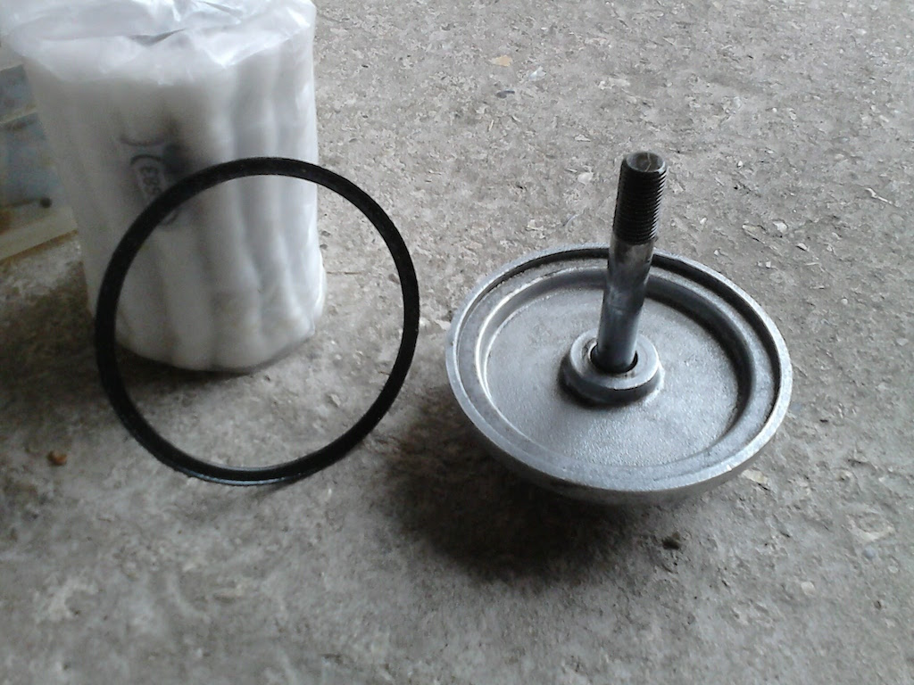
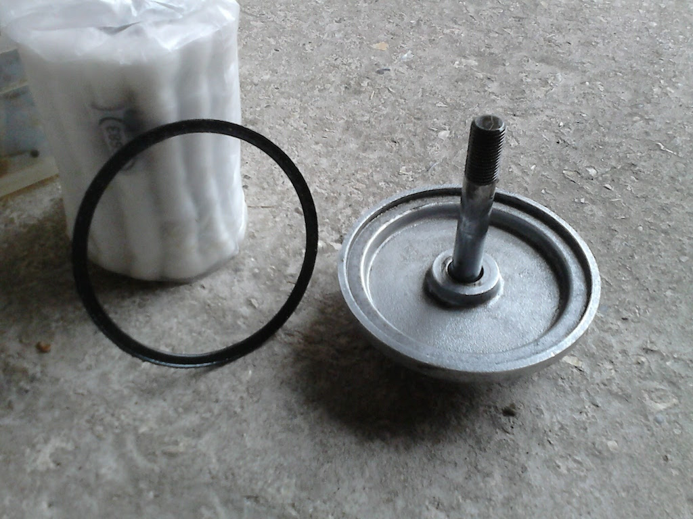
The next two photos show the base of the housing. The first is just the base and the rubber seal that goes between it and the housing. The second photo also shows one of the rubber seals that were supplied with the filter element. As can be seen, they are too small! The old seal has an outside diameter of 90 mm. So I will need to try to find some for the next oil change.
Consequently I had to reuse the old seal, turning it over so as to provide a little more flexibility.
Go to top.Tappet Adjustment
My aim had been to adjust the tappets while the oil was draining (and thus hot), but it took longer than planned to remove the oil filter and find the plan for adjusting the valves. So the engine was not quite as warm by the time I came to tackle the tappets. Instead of 19 thou, I decided to adjust them to 17 thou. Even then, I had to open them all a little.
I was suprised to find that neither the Instruction Manual nor TCs Forever gave the order for adjusting the vale clearance. The XPAG follows the 'rule of 9' and using the following order minimises the turns of the crankshaft:
| Check Valve No. | With this valve fully down |
| 1 | 8 |
| 3 | 6 |
| 5 | 4 |
| 2 | 7 |
| 8 | 1 |
| 6 | 3 |
| 4 | 5 |
| 7 | 2 |
However, when I ran the engine it sounded very noisy. I also read that newer camshafts required only a 12 thou gap, and you don't know whether a newer camshaft has been fitted at some time. Luckily you don't need to dismantle the engine to find out which type of camshaft is fitted, since the original camshafts have assymetric inlet and outlet valve timing, whereas the newer camshaft has symetric timing. Details of the test can be found here.
My tests indicate that XPAG 7592 has the original type of camshaft and so 19 thou gap is correct. The increased noise is probably due to indents on the rockers. A feeler guage bridges these indents and so you end up with an oversized gap.
Go to top.Steering Box
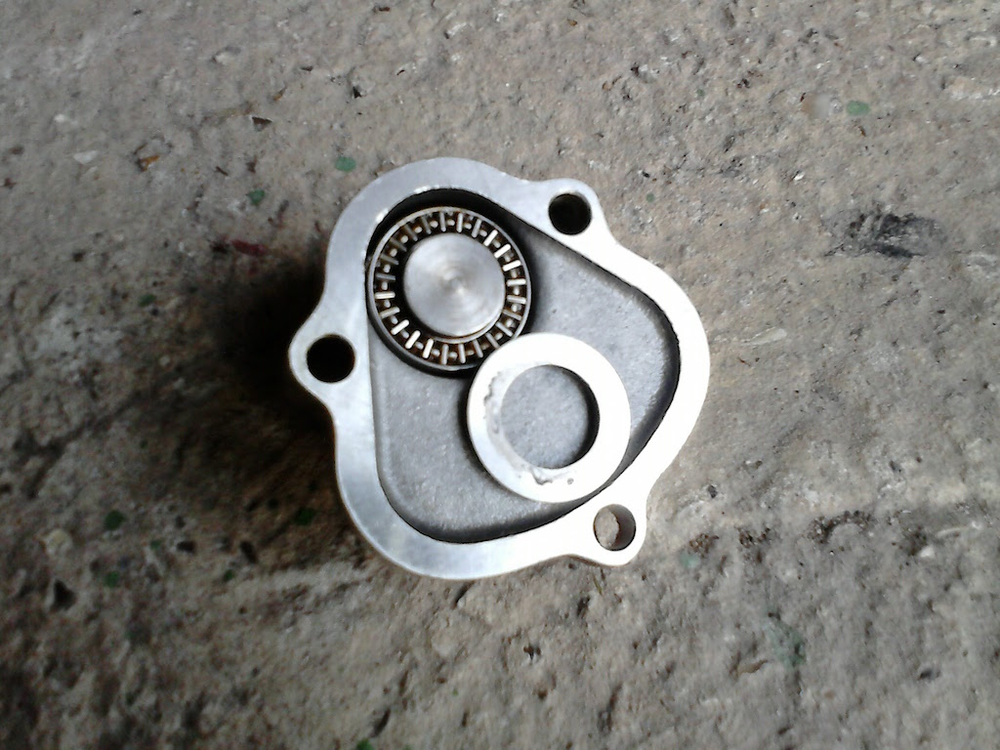 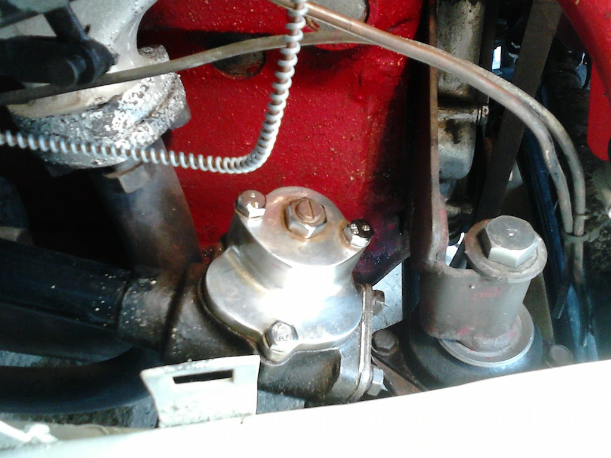The Bishop Cam steering box on the TC is known to be problematic and is described by Sherrel as the Achillies Heel" of the TC. For TC4985, driving around bends is fine, but keeping the car going straight is difficult and turning at slow speed is very heavy. This is in spite of the box being fitted with a 'Tompkins kit', which replaces the top plate and the shims beneath it with a roller bearing. This stainless steel addition to the steering box can be seen in the photo to the right. The next photo shows the underside of the new top, with one of the washers that fit either side of the bearing moved to expose that bearing.
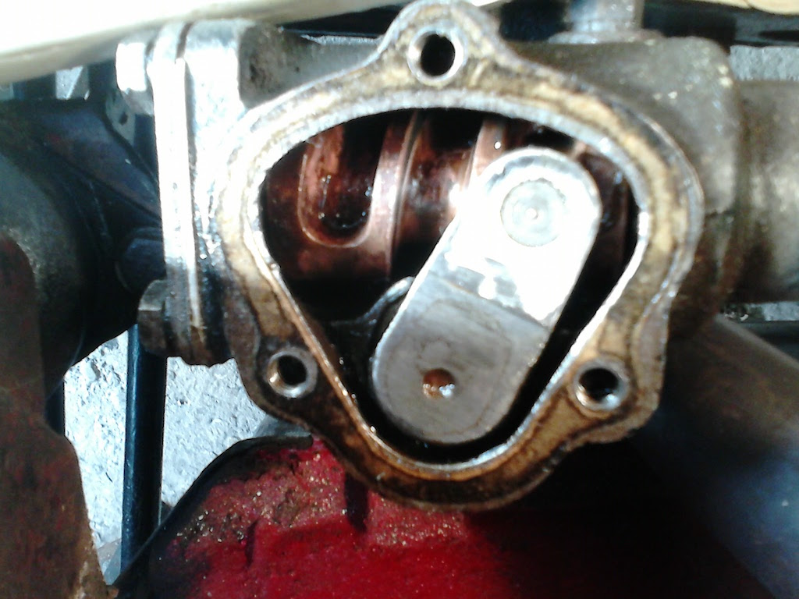I opened the steering box so as to check the amount of oil that it contained. What surprised me was that the oil was very thick. It is suposed to contain EP140 oil as used in the gearbox and back axle. At first I thought that the oil had thickened with age. However, this did not seem to be the case. I can only assume that someone filled the box with more viscous oil either so as to improve the steering or to prevent the oil leaking past the seal on the sector shaft.
I removed as much of the thick oil as I could using a screwdriver blade and rag. The final photo shows the inside of the box after removing the oil. The top of the sector shaft, with the peg that engages with the worm gear, is off-centre since the front wheels have been turned.
I dribbled EP140 oil into the Tompkins kit bearing and filled the box before reassembling it. I will now need to wait until I have driven the car for a while to see if it makes any difference to the steering or whether the oil leaks out.
Go to top.Wheel Hubs
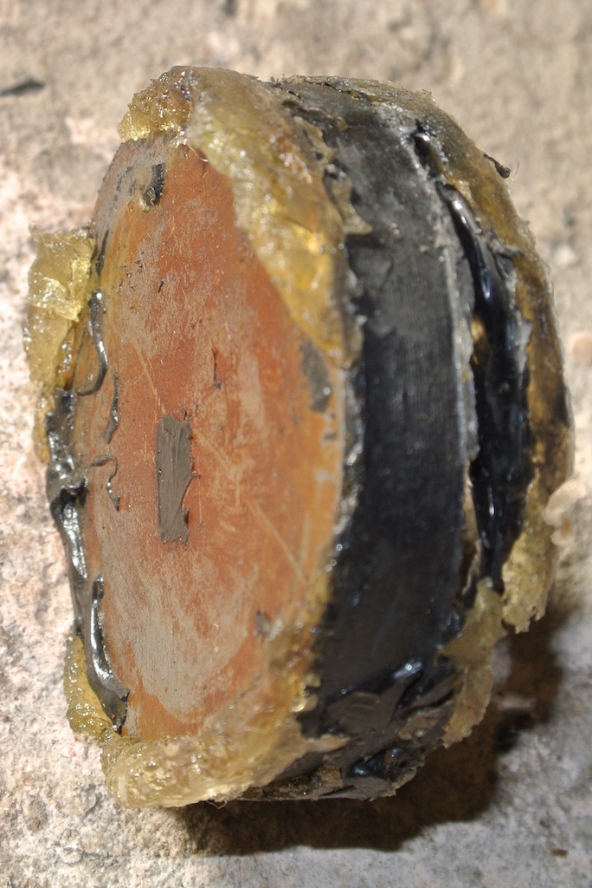 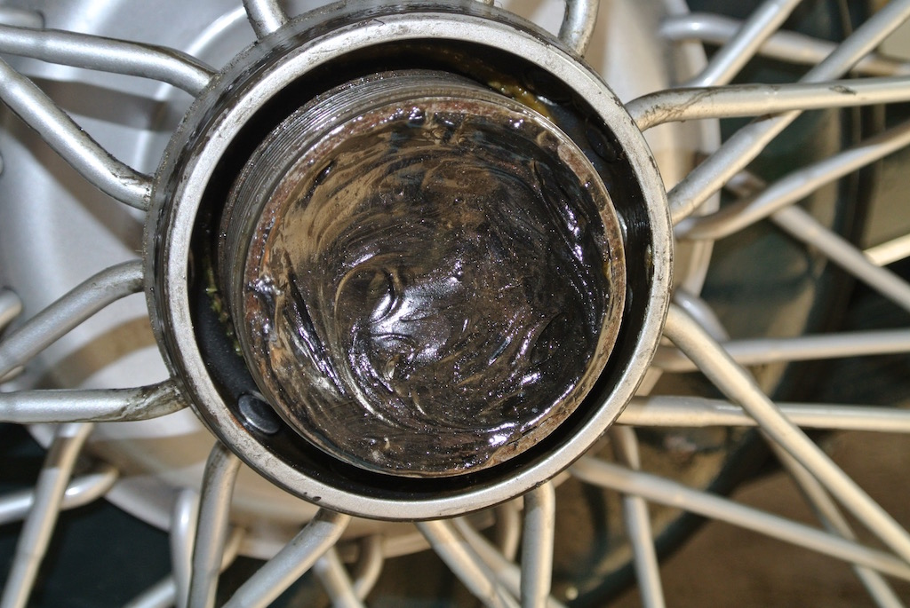My list of service jobs includes repacking the bearings of the front hubs and checking the state of the bearings of the rear hubs. When I had previously removed the rear wheels I thought the centre of the hubs had been packed with grease and the surface had gone hard. So I set out to 'dig out' the grease. However, I discovered that what I thought was grease was, in fact, a thin metal disc with a thicker layer of rubbery material holding it in place.
Beneath this 'plug' was what I expected to find, a grease nipple for the bearing.

I sent some photos and some questions to the Octagon Club's TC technical support man and spoke to a TA owner. Both agreed that someone was trying to prevent oil from the back axle getting into the brake drums. However, I can't see how oil could get into the brake drums via this route and when I removed the 'plugs' there was no sign of any oil. So I put ten pumps of grease into each rear hub and left out the 'plug'.
When it comes to the front hubs, Sherrill (page 102) says "The Near Side (L/H) stub has a left hand thread; the Off Side (R/H) has a right hand thread;" To me this means that the nut on the N/S stub is turned anti-clockwise to tighten it, which is the opposite way to the N/S spinner. However, anti-clockwise movement loosened the nut! Consistently, the O/S hub retaining nut needed to be turned clockwise to loosen it. Actuall, I found that the O/S nut was only finger tight!
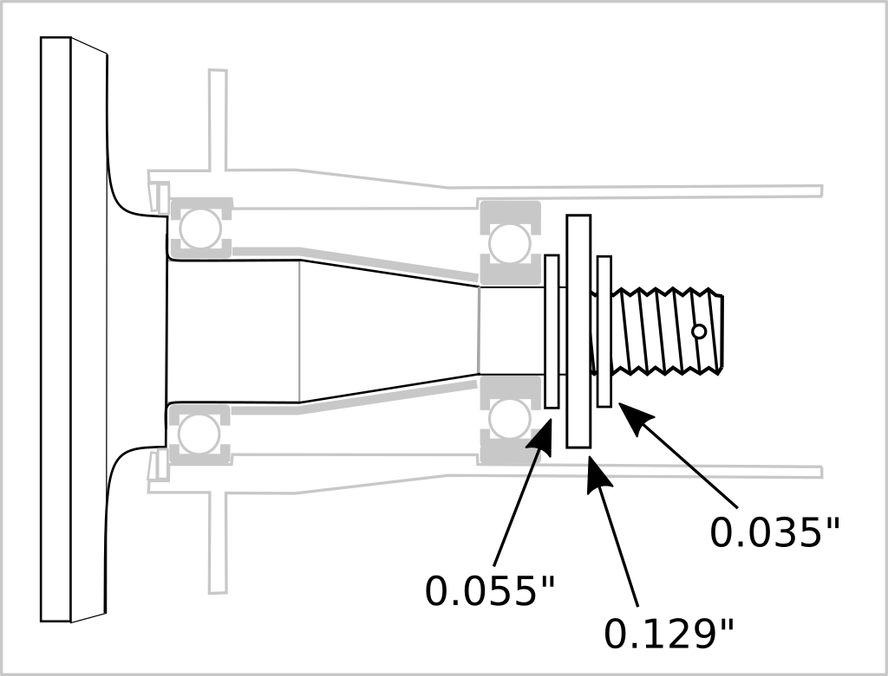'The MGTC Front End' by Jim Buell (3rd edition, 2014, page 17) says "This washer is cupped with a slight dish shape so that when you tighten the nut it tightens against the inner part of the bearing, which tightens against the spacer tube, which tightens against the inner part of the inner bearing, which tightens against the spindle. It is made this way so the wheel will revolve freely when you tighten the nut.". Instead of finding a cupped washer under the retaining nut on the N/S I found a large flat washer (with holes around it) with a smaller washer either side. These smaller washers are the size of the inner race of the outer bearing. The diagram shows this arrangement, although I have guessed the internal structure of the hub, since I did not remove the bearings.
I had to use greater than 90 lb-ft torque to undo the N/S nut and used about 100 lb-ft to tighten it so as to align the slot in the nut with the split pin hole in the stub axle. Buell (2014) states 80 lb-ft. To my surprise I was able to remove the N/S hub with just a small 'tap'. However, the O/S hub would not budge, my adaptation of my old hub puller not being up to the job. So I ordered a hub puller!
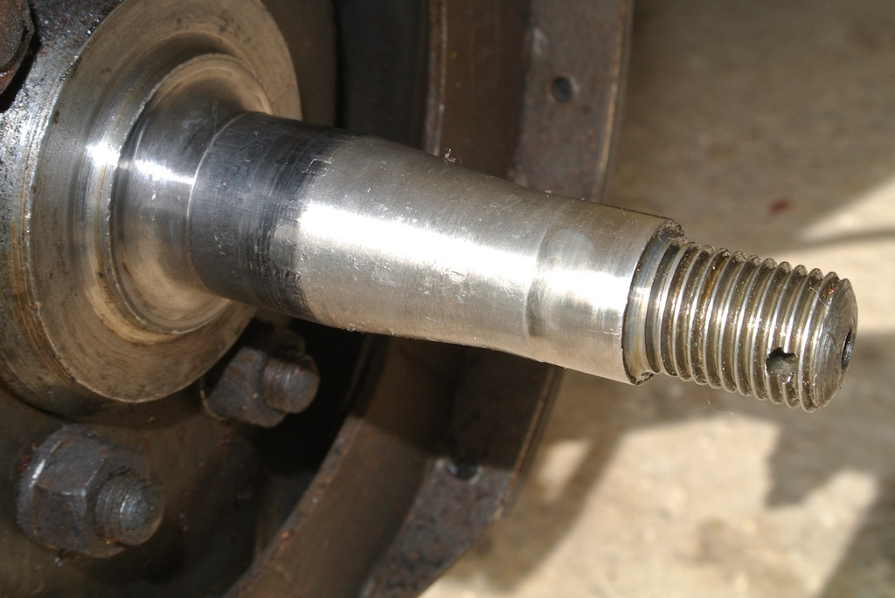Unfortunately the new puller wasn't quite up to the job either, since it was not big enough to go right around the hub. However, by hooking one arm of the puller under a drum nut I was able to remove the hub. To my surprise, it had a slightly cupped washer under the retaining nut, just as described by Buell. I suspect that at some time someone has put the N/S washer on the wrong way round and flattened it. I could see that the cupped and 'flat' washers otherwise looked identical.
However, the main reason for removing the hubs was to inspect the stub axles. As can be seen from the photo, they appear to be in good condition. However, you can find out what happened when I removed the stub axles here.
Go to top.Brakes
With the car on axle stands and the wheels on it is easy to adjust the brakes using the two cam adjusters on each backplate. I had noticed before that the adjuster for the leading shoe on the rear offside wheel turns without moving the shoe, so that shoe will be causing extra pedal movement.
Having earlier replaced the two handbrake cables, I looked at their adjustment. According to Sherrell you should 'use the handbrake lever butterfly adjustment to position cable levers perependicular'. The cable levers are a little forward of perpendicular, but there is no adjustment left on the butterfaly! So I left then as they are until I have the opportunity to examine the butterfly adjuster in more detail. So far the handbrake has been working very well.
Go to top.Radiator Hoses
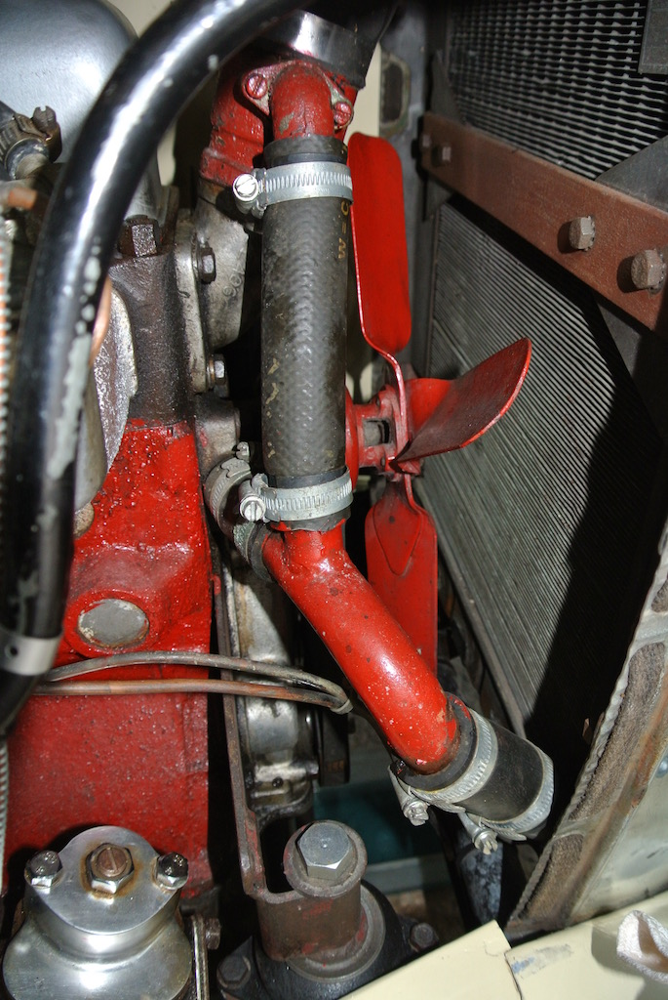For a while there had been a very slight drip from the hose leaving the water pump housing. But towards the end of November 2016 the leak became more pronounced. Also, I had not replaced the antifreeze since owning the car, so I decided to drain the system and replace both the hoses and the antifreeze.
The upper hose in the photo is the thermostat bypass, with the two shorter hoses providing the normal flow. The bypass hose is narrower than the other two. I measured the so-called Y-pipe diameter as 15/16th of an inch for the bypass junction and 1 1/8th of an inch for the other two. Unfortunately I could only buy metric sized hose locally. So I bought some 22mm hose and a right-angled 28mm hose from which I cut two short lengths. A smear of washing up liquid helped get the hosed in place.
When draining down the system I used a 1/2" copper soldered joint to deflect the water from the radiator tap downwards and a length of neoprene tubing pushed on to the block tap so as to get the coolant into a bowl. Although the car's handbook says that the capacity is eight litres, I could only get 6½ litres in. However, the level in the radiator has not dropped even after more than 50 miles.
Note that I did not attempt to replace the large diameter hose between the top of the radiator and the thermostat housing.
Go to top.© David James 2016 Last updated: 15th December 2016